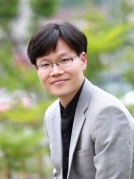

About Me
About Me

- 박현우, 공학박사
- 교수
- 겸직: 동아대학교 대학원 ICT융합해양스마트시티공학과
- 동아대학교 건설시스템공학과 s12-0507
(49315) 부산광역시 사하구 낙동대로550번길 37 - 전화: 051-200-7630
- 팩스: 051-201-1419
- 이메일: hwpark at dau.ac.kr
- 학력
- 공학박사, 토목공학, 2002년 2월
서울대학교 - 공학석사, 토목공학, 1997년 2월
서울대학교 - 공학사, 토목공학, 1995년 2월
서울대학교
- 공학박사, 토목공학, 2002년 2월
- 박사학위논문
- “구조물 손상진단을 위한 SI에서의 정규화 기법”
지도교수: 이해성 교수, 서울대학교 토목공학과
- “구조물 손상진단을 위한 SI에서의 정규화 기법”
- 경력
- 2018년 3월 - 현재
- 교수, 동아대학교 건설시스템공학과
- 2013년 3월 - 2018년 2월
- 부교수, 동아대학교 토목공학과
- 공과대학 부학장 (2013년 2월 - 2015년 1월)
- 2007년 9월 - 2013년 2월
- 조교수, 동아대학교 토목공학과
- 2007년 3월 - 2007년 8월
- 전임강사, 동아대학교 토목공학과
- 2006년 6월 - 2007년 2월
- 차장, 한국철도공사 연구개발센터
- 고속철도(KTX) 궤도의 개량 및 유지보수 계획을 위한 의사결정 지원 시스템 개발
(한국건설교통기술평가원 지원, 2006-2010년, 약 43억 원)
- 2005년 5월 - 2006년 5월
- 선임연구원, Korea Bridge Design & Engineering Research Center
- 불연속 시스템 파라미터의 SI를 위한 1-norm 기반 정규화 기법 개발
- 표면 부착형 능동 센서로 가진된 후판 내 초음파의 수치해석
- 정규화 기법을 이용한 계측 가속도의 표류 없는 시간적분 기법 개발
- 2004년 11월 - 2005년 4월
- 방문연구원, 미국 Carnegie Mellon University 토목환경공학과 (호스트: 손훈 교수)
- 구조건전성 모니터링을 위한 일반화 극치분포 기반 파라미터 추정 기법 개발
- 시간역전 과정과 연속 이상치 분석을 결합한 무기저 손상 평가 기법 개발
- 2003년 8월 - 2004년 8월
- 박사후연구원, 미국 Stanford University 토목환경공학과
한국과학재단 박사후 국외연수 지원 (지도: Kincho H. Law 교수) - 판형 구조물의 구조건전성 모니터링을 위한 Lamb파 기반 향상된 시간역전 기법 개발
- 구조건전성 모니터링을 위한 단기 손상 평가 기법 개발
- 박사후연구원, 미국 Stanford University 토목환경공학과
- 2002년 3월 - 2003년 4월
- 박사후연구원, 한국원자력연구원 (Integrated Safety Team)
- 면진장치의 이력 거동 식별을 위한 시간영역 SI 기법 개발
- 2018년 3월 - 현재